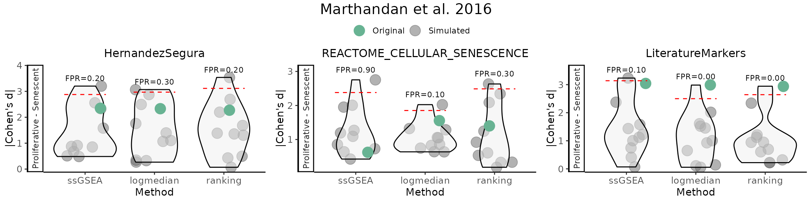
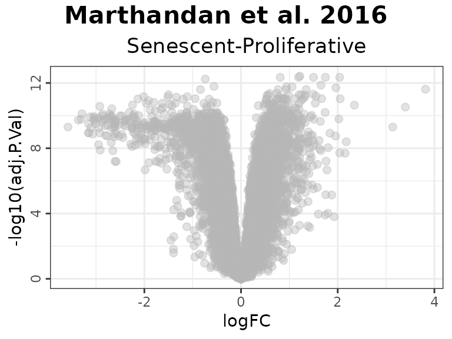
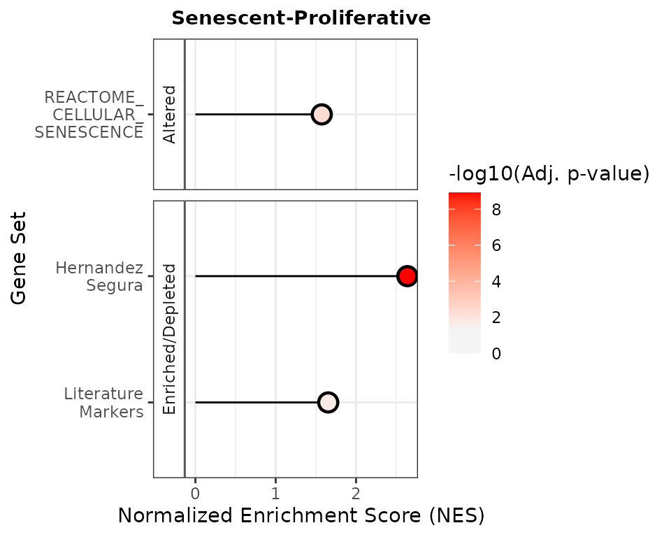

Benchmarking Mode Tutorial
Source:vignettes/Tutorial_BenchmarkingMode.Rmd
Tutorial_BenchmarkingMode.RmdThis vignette provides a comprehensive introduction to the markeR package, focusing on its Benchmarking Mode. This mode is designed to evaluate the performance of gene signatures in quantifying specific biological states or phenotypes, such as disease states or cellular conditions. It allows users to assess the robustness and reliability of gene signatures across various conditions, providing a standardized framework for benchmarking.
Installation
# install.packages("devtools")
devtools::install_github("DiseaseTranscriptomicsLab/markeR")Case-study: Senescence
We will be using an already pre-processed gene expression dataset,
derived from the Marthandan et al. (2016) study (GSE63577), that
includes human fibroblast samples cultured under two different
conditions: replicative senescence and proliferative control. The
dataset has already been filtered and normalized using the
edgeR package. For more information about the dataset
structure, see the help pages for ?counts_example and
?metadata_example.
This dataset serves as a working example to demonstrate the main functionalities of the markeR package. In particular, it will be used to showcase the two primary modules designed for benchmarking gene signatures:
- Score: calculates expression-based signature scores for each sample, and
- Enrichment: evaluates the over-representation of gene signatures within ranked gene lists.
To illustrate the usage of markeR, we use three gene
sets commonly associated with cellular senescence:
- LiteratureMarkers: A small, curated set of well-established senescence-associated genes repeatedly reported in the literature. This concise gene set includes key markers often used for validating senescence phenotypes. This set includes information on the directionality of gene regulation (i.e., whether genes are typically up- or down-regulated in senescence).
- REACTOME_CELLULAR_SENESCENCE: A comprehensive gene set from the MSigDB REACTOME collection, representing known molecular pathways involved in cellular senescence and commonly used in enrichment-based analyses. This is also treated as an undirected gene set without information on the up- or down-regulation of individual genes.
- HernandezSegura: A transcriptomic gene set identified by Hernandez-Segura et al. (2017) as consistently altered across multiple senescence models. This set includes information on the directionality of gene regulation. It has shown strong performance in classification and enrichment analyses, including in the original paper of markeR.
## $HernandezSegura
## gene enrichment
## 1 ACADVL 1
## 2 ADPGK 1
## 3 ARHGAP35 -1
## 4 ARID2 -1
## 5 ASCC1 -1
## 6 B4GALT7 1
## 7 BCL2L2 1
## 8 C2CD5 -1
## 9 CCND1 1
## 10 CHMP5 1
## 11 CNTLN -1
## 12 CREBBP -1
## 13 DDA1 1
## 14 DGKA 1
## 15 DYNLT3 1
## 16 EFNB3 -1
## 17 FAM214B 1
## 18 GBE1 1
## 19 GDNF 1
## 20 GSTM4 -1
## 21 ICE1 -1
## 22 KCTD3 -1
## 23 KLC1 1
## 24 MEIS1 -1
## 25 MT-CYB 1
## 26 NFIA -1
## 27 NOL3 1
## 28 P4HA2 1
## 29 PATZ1 -1
## 30 PCIF1 -1
## 31 PDLIM4 1
## 32 PDS5B -1
## 33 PLK3 1
## 34 PLXNA3 1
## 35 POFUT2 1
## 36 RAI14 1
## 37 RHNO1 -1
## 38 SCOC 1
## 39 SLC10A3 1
## 40 SLC16A3 1
## 41 SMO -1
## 42 SPATA6 -1
## 43 SPIN4 -1
## 44 STAG1 -1
## 45 SUSD6 1
## 46 TAF13 1
## 47 TMEM87B 1
## 48 TOLLIP 1
## 49 TRDMT1 -1
## 50 TSPAN13 1
## 51 UFM1 1
## 52 USP6NL -1
## 53 ZBTB7A 1
## 54 ZC3H4 -1
## 55 ZNHIT1 1
##
## $REACTOME_CELLULAR_SENESCENCE
## [1] "CDC27" "E2F2" "SCMH1" "MRE11" "MAP2K3" "MAPK9"
## [7] "ANAPC4" "MAP2K4" "MAP4K4" "RPS6KA2" "UBE2D1" "EED"
## [13] "MAP2K7" "TNRC6C" "MAPKAPK5" "ANAPC5" "TNRC6A" "TINF2"
## [19] "AGO1" "CDC23" "CABIN1" "MAPK1" "HIRA" "TNRC6B"
## [25] "E2F1" "RBBP7" "MAPK3" "ACD" "NBN" "CCNE1"
## [31] "FZR1" "ERF" "CDK6" "H2AZ2" "EZH2" "MAPK8"
## [37] "UBE2S" "MAP2K6" "NFKB1" "MAPK10" "ANAPC15" "CDKN1B"
## [43] "PHC1" "ASF1A" "MAPK14" "E2F3" "LMNB1" "RAD50"
## [49] "TFDP2" "MAPKAPK3" "IL1A" "RPS6KA1" "UBN1" "RNF2"
## [55] "CDKN2C" "CDK2" "H1-3" "H1-1" "H2BC11" "CDKN1A"
## [61] "ID1" "AGO3" "POT1" "CDKN2D" "CDC16" "H3-3B"
## [67] "KDM6B" "TERF2" "CCNA1" "PHC2" "AGO4" "ETS1"
## [73] "CDK4" "MDM2" "IL6" "TXN" "HMGA1" "RB1"
## [79] "MINK1" "TP53" "ANAPC11" "CBX8" "CBX4" "RPS27A"
## [85] "CCNA2" "H2BC1" "TERF1" "CDKN2B" "CDKN2A" "ATM"
## [91] "HMGA2" "UBC" "VENTX" "ANAPC1" "TNIK" "MOV10"
## [97] "ETS2" "H2BC5" "H4C8" "RBBP4" "MAPKAPK2" "H3-3A"
## [103] "IGFBP7" "ANAPC10" "ANAPC16" "MAPK7" "TERF2IP" "H3-4"
## [109] "BMI1" "H1-4" "STAT3" "CXCL8" "UBE2E1" "UBB"
## [115] "FOS" "IFNB1" "CEBPB" "KAT5" "RELA" "PHC3"
## [121] "CBX2" "UBE2C" "CCNE2" "ANAPC2" "CDC26" "RPS6KA3"
## [127] "JUN" "SUZ12" "H2AC6" "H2BC4" "EHMT1" "EP400"
## [133] "H3C13" "CBX6" "H2AC20" "H1-5" "H2BC21" "H2BC13"
## [139] "MAPK11" "SP1" "H1-2" "H2AX" "H1-0" "ANAPC7"
## [145] "H2AC7" "H2BC26" "H4C3" "H3C12" "H4C11" "H3C4"
## [151] "MAP3K5" "H4C16" "H2BC12" "TFDP1" "MDM4" "H3C14"
## [157] "H3C15" "RING1" "EHMT2" "UBA52" "H2AJ" "H4C15"
## [163] "H4C14" "H4C12" "H2BC14" "H2BC8" "H3C8" "H2AB1"
## [169] "H2BC6" "H4C6" "H2BC17" "H3C6" "H4C13" "H3C11"
## [175] "H2BC9" "H3C1" "H4C9" "H2AC14" "H2BC3" "H4C5"
## [181] "H2AC8" "H4C4" "H2BC7" "H3C7" "H2AC4" "H2BC10"
## [187] "H4C1" "H4C2" "H3C10" "MIR24-2" "MIR24-1" "H3C2"
## [193] "H3C3" "H2AC18" "H2AC19"
##
## $LiteratureMarkers
## gene enrichment
## 1 CDKN1A 1
## 2 CDKN2A 1
## 3 GLB1 1
## 4 TP53 1
## 5 CCL2 1
## 6 LMNB1 -1
## 7 MKI67 -1
data(counts_example)
# Load example data
counts_example[1:5,1:5]## SRR1660534 SRR1660535 SRR1660536 SRR1660537 SRR1660538
## A1BG 9.94566 9.476768 8.229231 8.515083 7.806479
## A1BG-AS1 12.08655 11.550303 12.283976 7.580694 7.312666
## A2M 77.50289 56.612839 58.860268 8.997624 6.981857
## A4GALT 14.74183 15.226083 14.815891 14.675780 15.222488
## AAAS 47.92755 46.292377 43.965972 47.109493 47.213739For illustration purposes of different variable types, let’s imagine
we also had two additional variables: one indicating the number of days
between sample preparation and sequencing
(DaysToSequencing), and another identifying the person who
processed each sample (researcher). These variables are
hypothetical and not part of the original study design.
data(metadata_example)
set.seed("123456")
metadata_example$Researcher <- sample(c("John","Ana","Francisca"),39, replace = T)
metadata_example$DaysToSequencing <- sample(c(1:20),39, replace = T)
head(metadata_example)## sampleID DatasetID CellType Condition SenescentType
## 252 SRR1660534 Marthandan2016 Fibroblast Senescent Telomere shortening
## 253 SRR1660535 Marthandan2016 Fibroblast Senescent Telomere shortening
## 254 SRR1660536 Marthandan2016 Fibroblast Senescent Telomere shortening
## 255 SRR1660537 Marthandan2016 Fibroblast Proliferative none
## 256 SRR1660538 Marthandan2016 Fibroblast Proliferative none
## 257 SRR1660539 Marthandan2016 Fibroblast Proliferative none
## Treatment Researcher DaysToSequencing
## 252 PD72 (Replicative senescence) Ana 6
## 253 PD72 (Replicative senescence) Ana 18
## 254 PD72 (Replicative senescence) John 19
## 255 young Ana 2
## 256 young Francisca 9
## 257 young John 10Calculate Senescence Scores
The CalculateScores function computes the signature
scores for each sample based on predefined gene sets, such as a
senescence gene set. It returns a named list where each entry
corresponds to a specific gene set and includes the calculated scores,
along with metadata (if available). When setting
method = "all", the function returns a list, where each
element corresponds to a scoring method and contains the respective data
frame of scores, allowing comparison between methods. The function
allows users to select from three different scoring methods:
- ssGSEA: Computes an enrichment score for each gene set in each sample.
- logmedian: Calculates the score as the sum of the normalized (log2-median-centered) expression values of the genes in the gene set, divided by the number of genes.
- ranking: Determines the score by ranking the expression of the genes in the gene set and normalizing the result.
These methods are very similar and, when applied to a robust gene set, will yield similar results across all three methods. Empirically, a good gene set will be one that shows consistent results, both in the calculated scores and in Cohen’s d or F statistics, across different methods. If the gene set is not robust, or if there is considerable noise, the results across methods may differ significantly. Consistent scores across methods typically indicate a more reliable and meaningful gene set. These methods are explained in more detail below, allowing the user to select the most appropriate one for their analysis.
The PlotScores function can be used to compute and
visualize the scores in various ways, depending on the method and
variable chosen.
- If
method = "all"and the variable is categorical, it will return a heatmap of Cohen’s d or F statistics and a volcano plot showing contrasts between all groups of that variable. - If
method = "all"and the variable is numeric, a heatmap of Cohen’s F and a volcano plot will be produced. - If
method != "all"and the variable is categorical, it will generate a violin plot for each gene set. - If
method != "all"and the variable isNULL, a density plot of the score distribution will be displayed. - If
method != "all"and the variable is numeric, a scatter plot will be created to show the relationship between the scores and the numeric variable.
logmedian method
The following example uses the
logmedian method to calculate a gene
signature score. This method first applies a log2 transformation to the
expression values, and then centers them by subtracting the median
expression (across all samples) for each genes. The score for each
sample is then computed by summing the normalised expression values of
the genes in the gene set, and dividing by the number of genes in the
gene set. This normalization makes each gene’s expression relative to
its typical behavior across the dataset, allowing for meaningful
comparisons between genes with different expression scales. By using
log2 median-centering, the method ensures that both highly and lowly
expressed genes contribute comparably to the score, as long as their
variances are similar. This normalization emphasizes relative changes in
expression rather than absolute values, allowing the score to reflect
the coordinated behavior of the genes in a gene set. Users can calculate
the gene signature score for each sample based on one or more predefined
gene sets (signatures).
Here’s an example where we calculate the signature score using the “logmedian” method:
df_Scores <- CalculateScores(data = counts_example,
metadata = metadata_example,
method = "logmedian",
gene_sets = genesets_example)## Considering bidirectional gene signature mode for signature HernandezSegura## Considering unidirectional gene signature mode for signature REACTOME_CELLULAR_SENESCENCE## Considering bidirectional gene signature mode for signature LiteratureMarkers
head(df_Scores$REACTOME_CELLULAR_SENESCENCE)## sample score DatasetID CellType Condition
## 1 SRR1660534 -0.05098427 Marthandan2016 Fibroblast Senescent
## 2 SRR1660535 -0.05497976 Marthandan2016 Fibroblast Senescent
## 3 SRR1660536 -0.03370396 Marthandan2016 Fibroblast Senescent
## 4 SRR1660537 -0.02091467 Marthandan2016 Fibroblast Proliferative
## 5 SRR1660538 -0.01089274 Marthandan2016 Fibroblast Proliferative
## 6 SRR1660539 -0.01012807 Marthandan2016 Fibroblast Proliferative
## SenescentType Treatment Researcher DaysToSequencing
## 1 Telomere shortening PD72 (Replicative senescence) Ana 6
## 2 Telomere shortening PD72 (Replicative senescence) Ana 18
## 3 Telomere shortening PD72 (Replicative senescence) John 19
## 4 none young Ana 2
## 5 none young Francisca 9
## 6 none young John 10
head(df_Scores$HernandezSegura)## sample score DatasetID CellType Condition
## 1 SRR1660534 0.4460830 Marthandan2016 Fibroblast Senescent
## 2 SRR1660535 0.4564033 Marthandan2016 Fibroblast Senescent
## 3 SRR1660536 0.4727664 Marthandan2016 Fibroblast Senescent
## 4 SRR1660537 -0.1676110 Marthandan2016 Fibroblast Proliferative
## 5 SRR1660538 -0.1198661 Marthandan2016 Fibroblast Proliferative
## 6 SRR1660539 -0.1467108 Marthandan2016 Fibroblast Proliferative
## SenescentType Treatment Researcher DaysToSequencing
## 1 Telomere shortening PD72 (Replicative senescence) Ana 6
## 2 Telomere shortening PD72 (Replicative senescence) Ana 18
## 3 Telomere shortening PD72 (Replicative senescence) John 19
## 4 none young Ana 2
## 5 none young Francisca 9
## 6 none young John 10
head(df_Scores$LiteratureMarkers)## sample score DatasetID CellType Condition
## 1 SRR1660534 2.2008955 Marthandan2016 Fibroblast Senescent
## 2 SRR1660535 1.8078284 Marthandan2016 Fibroblast Senescent
## 3 SRR1660536 1.8542998 Marthandan2016 Fibroblast Senescent
## 4 SRR1660537 -0.3543785 Marthandan2016 Fibroblast Proliferative
## 5 SRR1660538 -0.3799436 Marthandan2016 Fibroblast Proliferative
## 6 SRR1660539 -0.4281760 Marthandan2016 Fibroblast Proliferative
## SenescentType Treatment Researcher DaysToSequencing
## 1 Telomere shortening PD72 (Replicative senescence) Ana 6
## 2 Telomere shortening PD72 (Replicative senescence) Ana 18
## 3 Telomere shortening PD72 (Replicative senescence) John 19
## 4 none young Ana 2
## 5 none young Francisca 9
## 6 none young John 10The user can also chose to directly plot the scores.
Effect sizes can be computed using the compute_cohen
parameter (default = T): when the grouping variable has
only two levels, Cohen’s d is calculated by default. If there are more
than two levels, Cohen’s f is used unless a specific pairwise comparison
is defined via cond_cohend, in which case Cohen’s d is
reported for that comparison. If pvalcalc = TRUE (default =
FALSE), an associated p-value (not corrected for multiple
testing) is also reported. The p-value is derived from a two-sample
t-test for two-group comparisons or numeric variables, or from an ANOVA
for multi-group comparisons.
senescence_triggers_colors <- c(
"none" = "#E57373", # Soft red
"Telomere shortening" = "#4FC3F7" # Vivid sky blue
)
cond_cohend <- list(A=c("Senescent"),
B=c("Proliferative"))
PlotScores(data = counts_example,
metadata = metadata_example,
gene_sets = genesets_example,
ColorVariable = "SenescentType",
Variable="Condition",
method ="logmedian",
ColorValues = senescence_triggers_colors,
ConnectGroups=TRUE,
ncol = NULL,
nrow = 1,
widthTitle=24,
limits = NULL,
legend_nrow = 1,
pointSize=4,
compute_cohen=T,
cond_cohend=cond_cohend,
title="Marthandan et al. 2016",
labsize=9,
titlesize = 12) Interestingly, when we provide directionality for a signature—such as the Literature_Senescence set—the interpretation of the results can change substantially. For example, without specifying direction, senescent samples may appear to have lower scores than proliferative ones. But once directionality is accounted for, the scores shift in a way that aligns better with biological expectations. Therefore, it is strongly advised that, whenever possible (i.e., if known), the user states the putative regulation “sign” of the genes in the gene set This helps ensure more accurate and meaningful interpretations of the data.
GeneSets_Example_Bidirectionality <- list(LiteratureMarkers=genesets_example$LiteratureMarkers,
LiteratureMarkers_Unidirectional = genesets_example$LiteratureMarkers$gene)
print(GeneSets_Example_Bidirectionality)## $LiteratureMarkers
## gene enrichment
## 1 CDKN1A 1
## 2 CDKN2A 1
## 3 GLB1 1
## 4 TP53 1
## 5 CCL2 1
## 6 LMNB1 -1
## 7 MKI67 -1
##
## $LiteratureMarkers_Unidirectional
## [1] "CDKN1A" "CDKN2A" "GLB1" "TP53" "CCL2" "LMNB1" "MKI67"
PlotScores(data = counts_example,
metadata = metadata_example,
gene_sets = GeneSets_Example_Bidirectionality,
ColorVariable = "SenescentType",
Variable="Condition",
method ="logmedian",
ColorValues = senescence_triggers_colors,
ConnectGroups=TRUE,
ncol = NULL,
nrow = NULL,
widthTitle=24,
limits = NULL,
legend_nrow = 1,
pointSize=4,
compute_cohen=T,
cond_cohend=cond_cohend,
title="Marthandan et al. 2016",
labsize=9,
titlesize = 12) To use the function for numeric variables, the user should specify the relevant parameters, including the numeric variable to be analysed. The function will generate a scatter plot for the numeric variable, optionally calculating Cohen’s f as the effect size. The user can choose a correlation method (e.g., Pearson, Spearman, or Kendall) to assess the relationship between the variable and the signature scores. The plot will also include optional p-value calculations for comparisons.
Here is an example of how to configure the function for numeric variables:
PlotScores(data = counts_example,
metadata = metadata_example,
gene_sets = genesets_example,
Variable = "DaysToSequencing",
method = "logmedian",
ColorValues = "#3B415B",
ConnectGroups = FALSE,
ncol = NULL,
nrow = 1,
pointSize = 6,
compute_cohen = TRUE,
pvalcalc = TRUE,
title = "Marthandan et al. 2016",
labsize=9,
titlesize = 12,
widthTitle = 26,
cor = "pearson")For users interested in viewing the overall distribution of scores
across gene signatures, the PlotScores function can be used
without specifying the GroupingVariable parameter, i.e,
without grouping scores by any metadata variable. In this case, the
function will automatically generate a grid of density plots, with each
plot representing the distribution of scores for a specific gene set
PlotScores(data = counts_example,
metadata = metadata_example,
gene_sets = genesets_example,
method ="logmedian",
ColorValues = NULL,
ncol = NULL,
nrow = 1,
widthTitle=24,
limits = NULL,
title="Marthandan et al. 2016",
labsize=9,
titlesize = 11) ssGSEA method
The same approach can be applied for ssGSEA
(single-sample Gene Set Enrichment Analysis; Barbie et al. (2009)) for
score calculation and visualization, both for unidirectional and
bidirectional signatures. ssGSEA computes an enrichment score for each
gene signature in each sample using an adaptation of the
gsva() function from the GSVA package. This
method is useful for evaluating gene set enrichment in individual
samples rather than groups, as described in the sections below.
senescence_triggers_colors <- c(
"none" = "#E57373", # Soft red
"Telomere shortening" = "#4FC3F7" # Vivid sky blue
)
cond_cohend <- list(A=c("Senescent"),
B=c("Proliferative"))
PlotScores(data = counts_example,
metadata = metadata_example,
gene_sets = genesets_example,
ColorVariable = "SenescentType",
Variable="Condition",
method ="ssGSEA",
ColorValues = senescence_triggers_colors,
ConnectGroups=TRUE,
ncol = NULL,
nrow = 1,
widthTitle=24,
limits = NULL,
legend_nrow = 1,
pointSize=4,
compute_cohen=T,
cond_cohend=cond_cohend,
title="Marthandan et al. 2016",
labsize=9,
titlesize = 12) Ranking method
The ranking method computes gene signature scores for each sample by ranking the expression of signature genes in the dataset and normalizing the score based on the total number of genes.
The following example demonstrates the use of the “ranking” method for both unidirectional and bidirectional signatures:
senescence_triggers_colors <- c(
"none" = "#E57373", # Soft red
"Telomere shortening" = "#4FC3F7" # Vivid sky blue
)
cond_cohend <- list(A=c("Senescent"),
B=c("Proliferative"))
PlotScores(data = counts_example,
metadata = metadata_example,
gene_sets = genesets_example,
ColorVariable = "SenescentType",
Variable="Condition",
method ="ranking",
ColorValues = senescence_triggers_colors,
ConnectGroups=TRUE,
ncol = NULL,
nrow = 1,
widthTitle=24,
limits = NULL,
legend_nrow = 1,
pointSize=4,
compute_cohen=T,
cond_cohend=cond_cohend,
title="Marthandan et al. 2016",
labsize=9,
titlesize = 12) All methods
To compare various metrics across different condition combinations,
violin plots may not always be the best choice. In such cases, users can
setmethod = "all" to generate a summary heatmap and
volcano-like plot. The function will return one heatmap per gene set,
with rows corresponding to all possible combinations of values in the
GroupingVariable. In parenthesis is represented the
p-value, adjusted using the BH method (i.e., the
Benjamini–Hochberg false discovery rate procedure), across all
combinations of contrasts and gene signatures. It will also return a
volcano-like plot (Cohen’s d effect sizes vs -log10(adjusted p-values)),
where each dot represents a method-signature pair, faceted by contrast.
The dashed lines represent user-defined thresholds for significance and
effect size.
The mode parameter controls how contrasts are generated
for categorical variables, allowing users to adjust the complexity of
the analysis:
- “simple”: Performs the minimal number of pairwise comparisons between group levels (e.g., for a factor with levels A, B, C and D, it generates A - B, A - C, A - D, B - C, B - D, C - D).
- “medium”: Includes comparisons between one group and the union of other groups (e.g., A - (B + C + D); B - (A + C + D)), allowing for broader contrasts beyond simple pairwise comparisons.
- “extensive”: Allows for all possible algebraic combinations of group levels (e.g., (A + B) - (C + D)).
Overall_Scores <- PlotScores(data = counts_example,
metadata = metadata_example,
gene_sets=genesets_example,
Variable="Condition",
method ="all",
ncol = NULL,
nrow = 1,
widthTitle=30,
limits = c(0,3.5),
title="Marthandan et al. 2016",
titlesize = 10,
ColorValues = list(heatmap=c("#F9F4AE", "#B44141"),
volcano=signature_colors <- c(
HernandezSegura = "#A07395",
REACTOME_CELLULAR_SENESCENCE = "#6B8E9E",
LiteratureMarkers = "#CA7E45"
)
),
mode="simple",
widthlegend=30,
sig_threshold=0.05,
cohen_threshold=0.6,
pointSize=6,
colorPalette="Paired")
Overall_Scores$heatmap
Overall_Scores$volcanoClassification Potential of Gene Signatures
The ROC_Scores and AUC_Scores functions
allow users to evaluate the classification potential of gene set scores
based on ROC curves and their AUC values. These functions help to assess
how well a given score can differentiate between conditions, based on
predefined contrasts. Besides method="all", these functions
can also be used for each method individually.
The ROC_Scores function generates ROC curves for
different scoring methods across contrasts, allowing users to visualize
performance differences.
ROC_Scores(data = counts_example,
metadata = metadata_example,
gene_sets=genesets_example,
method = "all",
variable ="Condition",
colors = c(logmedian = "#3E5587", ssGSEA = "#B65285", ranking = "#B68C52"),
grid = TRUE,
spacing_annotation=0.3,
ncol=NULL,
nrow=1,
mode = "simple",
widthTitle = 28,
titlesize = 10,
title="Marthandan et al. 2016") The AUC_Scores function generates heatmaps summarizing
AUC values for each gene set, with methods as columns and contrasts as
rows. The plot is returned in the $plt element, and the
underlying data used to generate it is available in the
$data element.
AUC_Scores(data = counts_example,
metadata = metadata_example,
gene_sets=genesets_example,
method = "all",
mode = "simple",
variable="Condition",
nrow = 1,
ncol = NULL,
limits = NULL,
widthTitle = 28,
titlesize = 10,
ColorValues = c("#F9F4AE", "#B44141"),
title="Marthandan et al. 2016") False Positive Rate (FPR) Calculations
The user can assess the significance of gene set scores by comparing
observed effect sizes against a distribution of those originated by
random gene sets with the same number of genes and matched
directionality. For each original gene set, the function calculates the
observed Cohen’s d (and p‑value) using (GroupingVariable).
It then generates a number of simulated gene sets
(number_of_sims) by randomly sampling the same number of
genes from a user provided gene list (gene_list) and
computes their Cohen’s d values. The simulation results are visualised
as violin plots of the distribution of Cohen’s d values for each method,
overlaid with the observed values of the original gene sets, and a 95th
percentile threshold. Significance is indicated by distinct point shapes
based on the associated p‑value.
FPR_Simulation(data = counts_example,
metadata = metadata_example,
original_signatures = genesets_example,
gene_list = row.names(counts_example),
number_of_sims = 10,
title = "Marthandan et al. 2016",
widthTitle = 30,
Variable = "Condition",
titlesize = 12,
pointSize = 5,
labsize = 10,
mode = "simple",
ColorValues=NULL,
ncol=NULL,
nrow=1 ) 
Enrichment-Based Methods
Differentially Expressed Genes
The calculateDE function in the markeR
package leverages the limma framework to compute
differential gene expression statistics from raw count data. This
function is highly flexible and supports several modes of operation
depending on the user’s experimental design. In the examples below, we
illustrate two common scenarios:
-
Automatic Design Matrix with Contrasts: In the
first example, the design matrix is built automatically from the
metadata using a specified variable (here,
"Condition"). The user must explicitly define the comparisons of interest based on the levels of this variable (e.g.,Senescent - Proliferative). Internally, this approach fits a linear model without an intercept, enabling the user to define contrasts between the levels. This is ideal for simpler experimental designs, where quick comparison between predefined groups is desired without manually specifying the full model matrix. -
Providing an Externally Constructed Design Matrix:
In the second example, the user manually creates the design matrix
(e.g., using
model.matrix(~ 0 + Condition)for a no-intercept model) and provides it directly tocalculateDE. This gives full control over how the design is specified, including complex experimental setups or custom encodings. Multiple contrasts can be defined later, based on this matrix, to extract specific comparisons of interest, using theContrastparameter. If this parameter is left asNULL, the function will return results for all conditions (i.e. columns) defined in the design matrix. This approach is recommended when the user has a complex design or has already constructed the design matrix as part of a broader analysis pipeline.
Below are the corresponding code snippets demonstrating each scenario, by answering the same question: What are the genes differentially expressed between senescence and proliferative cells?
# Example 1: Build design matrix from variables (Condition) and apply a contrast.
# In this case, the design matrix is constructed automatically using the variable "Condition".
DEGs <- calculateDE(data = counts_example,
metadata = metadata_example,
variables = "Condition",
contrasts = c("Senescent - Proliferative"))
DEGs$`Senescent-Proliferative`[1:5,]## logFC AveExpr t P.Value adj.P.Val B
## CCND2 3.816674 4.406721 12.393130 2.747202e-15 2.435712e-12 24.70982
## MKI67 -3.581174 6.605339 -9.197510 2.007135e-11 4.992097e-10 15.96203
## PTCHD4 3.398914 3.556007 10.740867 2.318137e-13 3.002118e-11 20.35906
## KIF20A -3.365481 5.934893 -9.728709 4.176398e-12 1.844336e-10 17.51106
## CDC20 -3.304602 6.104079 -9.801724 3.375212e-12 1.657492e-10 17.72110
# Example 2: Supply a custom design matrix directly.
# Here, the design matrix is created externally (using no intercept, for instance).
design <- model.matrix(~0 + Condition, data = metadata_example)
colnames(design) <- c("Proliferative","Senescent")
DEGs2 <- calculateDE(data = counts_example,
metadata = NULL,
variables = NULL,
modelmat = design,
contrasts = c("Senescent - Proliferative"))
DEGs2$`Senescent-Proliferative`[1:5,]## logFC AveExpr t P.Value adj.P.Val B
## CCND2 3.816674 4.406721 12.393130 2.747202e-15 2.435712e-12 24.70982
## MKI67 -3.581174 6.605339 -9.197510 2.007135e-11 4.992097e-10 15.96203
## PTCHD4 3.398914 3.556007 10.740867 2.318137e-13 3.002118e-11 20.35906
## KIF20A -3.365481 5.934893 -9.728709 4.176398e-12 1.844336e-10 17.51106
## CDC20 -3.304602 6.104079 -9.801724 3.375212e-12 1.657492e-10 17.72110After running differential expression analysis (for example, using
the calculateDE function), the user can visualize their
results with the plotVolcano function. This function
provides a flexible interface for exploring their data by allowing the
user to:
-
Plot Differential Gene Expression Statistics:
Display a volcano plot with chosen statistics (e.g., log fold-change on the x-axis and –log₁₀ adjusted p-value on the y-axis). -
Color Interesting Genes:
Highlight genes that pass user-specified thresholds by adjustingthreshold_yandthreshold_x. -
Annotate Top and Bottom N Genes:
Optionally, label the top (and bottom) N genes based on the chosen statistic to quickly identify the most significant genes. -
Highlight Gene Signatures: If the user provides a
list of gene signatures using the
genesargument, the function can highlight these genes in the plot. The user can also specify distinct colors for putativelyupregulated and downregulated if their direction is known, or a color for genes that do not have a putative direction.
Below is an example usage of plotVolcano that visualizes
differential expression results from a DEResultsList. The
first plot shows the default behavior, generating a basic volcano plot
without thresholds or gene highlights. Subsequent examples demonstrate
how to customize the plot:
- Adding significance thresholds to highlight genes of interest,
- Annotating the top and bottom N genes by effect size,
- And using gene signatures to color genes across multiple plots arranged by contrast and signature.
These examples illustrate how users can customise the output plot to highlight biologically meaningful patterns or focus on specific gene sets.
# Plot Differentially Expressed Genes:
plotVolcano(DEGs, genes = NULL, N = NULL,
x = "logFC", y = "-log10(adj.P.Val)", pointSize = 2,
color = "#6489B4", highlightcolor = "#05254A", nointerestcolor = "#B7B7B7",
threshold_y = NULL, threshold_x = NULL,
xlab = NULL, ylab = NULL, ncol = NULL, nrow = NULL, title = "Marthandan et al. 2016",
labsize = 8, widthlabs = 25, invert = FALSE)
# Color Interesting Genes:
plotVolcano(DEGs, genes = NULL, N = NULL,
x = "logFC", y = "-log10(adj.P.Val)", pointSize = 2,
color = "#6489B4", highlightcolor = "#05254A", nointerestcolor = "#B7B7B7",
threshold_y = 0.0001, threshold_x = 1,
xlab = NULL, ylab = NULL, ncol = NULL, nrow = NULL, title = "Marthandan et al. 2016",
labsize = 8, widthlabs = 25, invert = FALSE)
# Annotate Top and Bottom N Genes:
plotVolcano(DEGs, genes = NULL, N = 5,
x = "logFC", y = "-log10(adj.P.Val)", pointSize = 2,
color = "pink", highlightcolor = "#05254A", nointerestcolor = "#B7B7B7",
threshold_y = NULL, threshold_x = NULL,
xlab = NULL, ylab = NULL, ncol = NULL, nrow = NULL, title = "Marthandan et al. 2016",
labsize = 8, widthlabs = 25, invert = FALSE)
# Change order: signatures in columns, contrast in rows
plotVolcano(DEGs, genes = genesets_example,
N = NULL,
x = "logFC", y = "-log10(adj.P.Val)", pointSize = 2,
color = "#6489B4", highlightcolor = "#05254A", highlightcolor_upreg = "#038C65", highlightcolor_downreg = "#8C0303",nointerestcolor = "#B7B7B7",
threshold_y = NULL, threshold_x = NULL,
xlab = NULL, ylab = NULL, ncol = NULL, nrow = NULL, title = "Marthandan et al. 2016",
labsize = 10, widthlabs = 24, invert = TRUE)Note on Continuous Variables
If the user wants to analyse continuous variables (e.g., time or
dosage), they must provide a custom design matrix via the
modelmat argument, instead of using the
variables argument. This is because the
variables argument is intended to be used for categorical
variables only: internally, when using variables to specify
a phenotypic variable of interest, the function constructs a design
matrix without an intercept and treats each level of the variable as a
discrete group. This is appropriate for defining explicit contrasts
between categorical levels but is not suitable for continuous variables,
where such discretization would distort the relationship.
For continuous variables, the user should instead build a design
matrix manually (e.g., using model.matrix(~ variable)),
ensuring that the variable of interest is numeric and has a
corresponding column in the matrix with the same name. The
calculateDE() function will then use this matrix directly
for linear modelling.
The interpretation of the differential expression results remains consistent: the statistics reflect always the expected change in expression associated with a 1-unit increase in the variable (e.g., one day, one unit of dosage, “Senescent” to “Proliferative”, etc).
design <- model.matrix(~1 + DaysToSequencing, data = metadata_example)
DEGs_continuous1 <- calculateDE(data = counts_example,
metadata = metadata_example,
modelmat = design,
contrasts = c("DaysToSequencing"))## Warning in limma::makeContrasts(contrasts = contrasts, levels = design_matrix):
## Renaming (Intercept) to Intercept
DEGs_continuous1$DaysToSequencing[1:3,]## logFC AveExpr t P.Value adj.P.Val B
## RNA45SN2 -0.07628608 7.712585 -1.626674 0.1117361 0.9997685 -6.018805
## RNA18SN2 0.06743439 9.577467 1.554171 0.1280974 0.9997685 -6.129426
## RNA18SN3 0.06743439 9.577467 1.554171 0.1280974 0.9997685 -6.129426This usage of the modelmat argument allows the user to
combine categorical and numeric variables in a fully customized design
matrix. In the example below:
-
(Intercept): Baseline expression when days = 0 and Condition = Control. -
DaysToSequencing: Change in expression per unit of time (day) increase. -
Senescent: Average difference in expression between Senescent and Control conditions.
This approach is useful when modeling continuous effects alongside group comparisons, and it provides complete flexibility in specifying the design.
# Manually construct the design matrix
model_matrix <- model.matrix(~ DaysToSequencing + Condition, data = metadata_example)
colnames(model_matrix) <- c("(Intercept)", "DaysToSequencing", "Senescent")
# Provide the custom design matrix to calculateDE using the `modelmat` argument
DEGs_continuous2 <- calculateDE(data = counts_example,
modelmat = model_matrix)
# Access results for each coefficient
DEGs_continuous2$`(Intercept)`[1:3, ]## logFC AveExpr t P.Value adj.P.Val B
## FN1 13.23994 13.21879 74.04645 1.265799e-43 3.210740e-43 89.73456
## EEF1A1 12.94192 12.85091 179.29631 1.402180e-58 9.033979e-57 121.69861
## GAPDH 12.71139 12.53188 147.86006 2.586838e-55 5.583501e-54 115.21324
DEGs_continuous2$DaysToSequencing[1:3, ]## logFC AveExpr t P.Value adj.P.Val B
## RNA45SN2 -0.08056063 7.712585 -1.689209 0.09914647 0.9853746 -6.052523
## RNA18SN2 0.06598991 9.577467 1.490666 0.14407989 0.9853746 -6.355482
## RNA18SN3 0.06598991 9.577467 1.490666 0.14407989 0.9853746 -6.355482
DEGs_continuous2$Senescent[1:3, ]## logFC AveExpr t P.Value adj.P.Val B
## CCND2 3.863054 4.406721 12.344742 4.643461e-15 4.865503e-12 24.20437
## MKI67 -3.655159 6.605339 -9.296026 1.907736e-11 5.010329e-10 16.02834
## PTCHD4 3.453362 3.556007 10.774059 2.907380e-13 3.864144e-11 20.14942Gene Set Enrichment Analyses
To perform GSEA, the user can use the runGSEA()
function. This function takes a named list of differential expression
statistics (one per contrast) and a set of gene signatures to compute
enrichment scores.
DEGList: A list of differentially expressed genes (DEGs) for each contrast.-
gene_sets: A list of gene sets, where each entry can be:- A vector of gene names (unidirectional analysis).
- A data frame where the first column is the gene name and the second column indicates the expected direction (+1 or -1, bidirectional analysis).
-
stat: The ranking statistic. If NULL, the ranking statistic is automatically selected:-
"B"for gene sets with no known direction (vectors). -
"t"for unidirectional or bidirectional gene sets (data frames). - If provided, this argument overrides the automatic selection.
-
ContrastCorrection: Logical, default isFALSE. IfTRUE, applies an additional multiple testing correction (Benjamini–Hochberg) across all contrasts returned in theDEGListresults list. This accounts for the number of contrasts tested per signature and provides more stringent control of false discovery rate across multiple comparisons (similar to answering the question “Is there any signature that is significant in any of the contrasts” instead of “For each contrast, is there any signature that is significant”). IfFALSE, the function only corrects for the number of gene sets.
GSEAresults <- runGSEA(DEGList = DEGs,
gene_sets = genesets_example,
stat = NULL,
ContrastCorrection = FALSE)
GSEAresults## $`Senescent-Proliferative`
## pathway pval padj log2err ES
## <char> <num> <num> <num> <num>
## 1: HernandezSegura 4.042321e-10 1.212696e-09 0.8140358 0.6376777
## 2: REACTOME_CELLULAR_SENESCENCE 3.375614e-03 5.063421e-03 0.2526439 0.3807095
## 3: LiteratureMarkers 1.838843e-02 1.838843e-02 0.1526759 0.7068136
## NES size leadingEdge stat_used
## <num> <int> <list> <char>
## 1: 2.638885 52 CNTLN, D.... t
## 2: 1.572974 137 H1-2, H2.... B
## 3: 1.653726 7 LMNB1, M.... tDepending on the statistic used, the interpretation of the plots changes:
-
B Statistic vs. t Statistic:
- The B statistic does not specify the direction (enriched or depleted) of the gene set’s alterations. It only indicates the strength of evidence for any alterations.
- The t statistic orders genes from stronger evidence of over-expression to stronger evidence for under-expression.
-
Graph’s annotation:
- When using the B statistic, the plot will include “Altered Gene Set” beneath its title to reflect this focus on whether genes are altered.
- For the t statistic, the plot will include “Enriched/Depleted Gene Set” beneath its title, indicating its focus on the enrichment or depletion of genes.
After running GSEA, the user can visualize enrichment plots using the
plotGSEAenrichment() function. This function generates
enrichment plots for each gene signature and contrast, displaying also
the Normalized Enrichment Scores (NES) and
adjusted p-value for each enrichment result. As
plotGSEAenrichment’s relevant graphical parameters:
-
grid = TRUE: Arranges the plots in a grid for better visualization. -
titlesize: Adjusts title font size. -
nrow/ncol: Specifies the grid layout for arranging plots.
plotGSEAenrichment(GSEA_results=GSEAresults,
DEGList=DEGs,
gene_sets=genesets_example,
widthTitle=40, grid = T, titlesize = 10, nrow=1, ncol=3) The plotNESlollipop() function creates lollipop plots
for visualizing Gene Set Enrichment Analysis (GSEA) results. Each plot
displays gene sets on the y-axis and Normalized Enrichment Scores (NES)
on the x-axis, with a color gradient proportional to the adjusted
p-value. The function supports multiple contrasts and includes options
for customizing the color gradient, significance threshold, and plot
layout. It can also arrange individual plots into a grid layout for
comparative visualization.
plotNESlollipop(GSEA_results=GSEAresults,
saturation_value=NULL,
nonsignif_color = "#F4F4F4",
signif_color = "red",
sig_threshold = 0.05,
grid = FALSE,
nrow = NULL, ncol = NULL,
widthlabels=13,
title=NULL, titlesize=12) ## $`Senescent-Proliferative`
The plotCombinedGSEA() function generates a scatter plot
to visualize the results of Gene Set Enrichment Analysis (GSEA) across
multiple contrasts. Each point represents a pathway, with:
- X-axis: Normalized Enrichment Score (NES)
- Y-axis: -log10 adjusted p-value (significance)
- Color: Gene sets
- Shape: Contrasts
- Dashed line: Significance threshold
This function helps compare enrichment results when the number of contrasts and the number of pathways is high, scenario of which the example herein is not too representative.
plotCombinedGSEA(GSEAresults, sig_threshold = 0.05, PointSize=6, widthlegend = 26 )Note on GSEA for All-negative gene sets
In gene set enrichment analysis, the behaviour of gene sets annotated with regulatory direction must be interpreted carefully. In our current implementation, if a gene set includes both positive and negative regulators of a process, the statistics for the negatively annotated genes are inverted, meaning that the enrichment reflects their effect on the process rather than simply their expression direction. This ensures that the final enrichment score captures the coordinated functional outcome of the gene set.
The same logic is preserved when a gene set contains only negatively annotated genes (e.g. negative regulators of senescence): the statistics are inverted so that a positive normalised enrichment score (NES) implies these inhibitors are less expressed, thereby supporting the activation of the process they repress (e.g. senescence). Conversely, a negative NES would suggest their upregulation, which could potentially suppress the process.
Comparison of both approaches
Based on these very simple analyses, the REACTOME_CELLULAR_SENESCENCE showed consistently poor performance, highlighing caution when this or other MSigDB pathways appear in common enrichment-based analyses with RNA-seq data. The HernandezSegura signature, with its moderate size (55 genes) and annotated gene direction, performed best in enrichment-based methods such as GSEA. In contrast, the LiteratureMarkers set yielded stronger results in scoring approaches, likely due to a small number of highly informative genes rather than coordinated activity across the entire set.
These findings highlight important trade-offs: while scoring methods offer per-sample resolution and are less sensitive (in terms of statistical significance) to gene set size, making them useful for classification tasks, they may be overly influenced by a small subset of genes, which could limit biological interpretability. While more robust to sample heterogeneity and better at capturing coordinated expression changes, enrichment-based methods are sensitive to gene set composition and size. Caution is warranted when interpreting results, especially from score-based approaches, as strong signals may not always reflect the intended biological process, but rather a handful of dominant genes.
Visualise Individual Gene Behaviour
As highlighted in the previous section, score-based approaches can be
disproportionately influenced by a small subset of genes. To address
this, markeR includes dedicated functions for exploring
individual gene behaviour, enabling users to assess if and which genes
may be driving the overall signal. We demonstrate this functionality
using the LiteratureMarkers gene set.
The ExpressionHeatmap function generates a heatmap to
display the expression levels of selected senescence genes across
samples. Samples are annotated by a chosen condition, and expression
values are color-scaled for easy visual comparison. Clustering options
and customizable color palettes allow for flexible and informative
visualization.
annotation_colors <- list(
Condition = c(
"Senescent" = "#65AC7C", # Example color: greenish
"Proliferative" = "#5F90D4" # Example color: blueish
)
)
ExpressionHeatmap(data=counts_example,
metadata = metadata_example,
genes=genesets_example$LiteratureMarkers$gene,
annotate.by = c("Condition"),
annotation_colors = annotation_colors,
colorlist = list(low = "#3F4193", mid = "#F9F4AE", high = "#B44141"),
cluster_rows = TRUE,
cluster_columns = FALSE,
title = "Senescence Genes",
titlesize = 20,
legend_position = "right",
scale_position="right")The IndividualGenes_Violins function creates violin
plots to visualize the expression distributions of selected senescence
genes across conditions. Jittered points represent individual samples,
and grouping (x axis, GroupingVariable) and color variables
(ColorVariable and ColorValues) from the
metadata allow for additional stratification and insight. Customization
options include layout, point size, colors, and axis labeling.
senescence_triggers_colors <- c(
"none" = "#E57373", # Soft red
"Telomere shortening" = "#4FC3F7" # Vivid sky blue
)
IndividualGenes_Violins(data = counts_example,
metadata = metadata_example,
genes = genesets_example$LiteratureMarkers$gene,
GroupingVariable = "Condition",
plot=T,
ncol=NULL,
nrow=1,
divide=NULL,
invert_divide=FALSE,
ColorValues=senescence_triggers_colors,
pointSize=2,
ColorVariable="SenescentType",
title="Senescence Genes",
widthTitle=16,
y_limits = NULL,
legend_nrow=1,
xlab="Condition",
colorlab="") The CorrelationHeatmap function displays pairwise
correlations between selected genes, helping to reveal co-expression
patterns within the senescence signature. Correlations can be computed
separately for different conditions, and the heatmap is fully
customizable with options for clustering, color scaling, and correlation
method (e.g., Spearman or Pearson).
CorrelationHeatmap(data=counts_example,
metadata = metadata_example,
genes=genesets_example$LiteratureMarkers$gene,
separate.by = "Condition",
method = "spearman",
colorlist = list(low = "#3F4193", mid = "#F9F4AE", high = "#B44141"),
limits_colorscale = c(-1,0,1),
widthTitle = 16,
title = "Senescence Genes",
cluster_rows = TRUE,
cluster_columns = TRUE,
detailedresults = FALSE,
legend_position="right",
titlesize=20)The ROCandAUCplot function evaluates the discriminatory
power of individual genes in the signature by computing ROC curves and
AUC values based on a binary classification (e.g., senescent
vs. proliferative). If the selected grouping variable has more than two
levels, the user can specify the reference group using the class
parameter. For example, if a variable has levels A, B, C, and D, setting
class = c("A", "B") will group samples from A and B
together as the positive class*, while the remaining samples (C and D)
are automatically grouped as the negative class. Additionally, the user
can use the group_var parameter to split and display
results separately for each level of another metadata variable —
allowing for subgroup-specific ROC analyses. Outputs include individual
ROC plots and an AUC heatmap, with customisable layout, color schemes,
and clustering options—ideal for identifying genes with strong
discriminatory ability. If group_varis not specified, the
AUC values will be displayed in a barplot.
- For ease of interpretation, the directionality of the comparison is adjusted so that the AUC is always >=0.5, showing only discriminatory power rather than directionality.
options(error=recover)
ROCandAUCplot(counts_example,
metadata_example,
condition_var = "Condition",
class = "Senescent",
group_var=NULL,
title = NULL,
genes=genesets_example$LiteratureMarkers$gene,
plot_type = "all",
auc_params = list(colors = "#3B415B",
limits = c(0.5,1) ),
roc_params = list(nrow=3,
ncol=3,
colors="#3B415B"),
commomplot_params = list(widths=c(0.5,0.3)))The CohenD_IndividualGenes function computes the effect
size (Cohen’s d) of the difference in expression of each gene between
two conditions, given by the variable condition_var. If the
selected condition variable has more than two levels, the
class parameter specifies which condition will be compared
to the rest. Additionally, the user can use the group_var
parameter to split and display results separately for each level of
another metadata variable. Results are visualized as a heatmap, with
customizable color scales and clustering options for easy interpretation
of effect sizes across genes. If group_var is not
specified, the function will return a barplot instead.
CohenD_IndividualGenes(counts_example,
metadata_example,
genes=genesets_example$LiteratureMarkers$gene,
condition_var = "Condition",
class = "Senescent",
group_var = NULL,
params = list(colors = "#3B415B",
limits = NULL,
cluster_rows=T))The plotPCA function performs a PCA on the expression of
a selected set of genes to understand if they explain enough variance in
the data, allowing the user to test if the genes in the signature are
sufficient to separate the group of interest (given by the
`ColourVariable’ parameter). While previous metrics assess
discriminatory power quantitatively (e.g., AUC), PCA provides a
complementary, unsupervised visualization that can help assess whether
the gene signature is sufficient to visually separate groups of
interest. Users can customize which principal components to display
using the PCs argument and adjust layout, point size, and colour
annotations for comparison across conditions.
annotation_colors <- c(
"Senescent" = "#65AC7C", # Example color: greenish
"Proliferative" = "#5F90D4" # Example color: blueish
)
plotPCA(data = counts_example,
metadata = metadata_example,
genes=genesets_example$LiteratureMarkers$gene,
scale=FALSE,
center=TRUE,
PCs=list(c(1,2), c(2,3), c(3,4)),
ColorVariable="Condition",
ColorValues=annotation_colors,
pointSize=5,
legend_nrow=1,
ncol=3,
nrow=NULL)Comment
As demonstrated by the behaviour of individual genes in the
LiteratureMarkers gene set, LMNB1, MKI67, and GLB1 appear
to drive the overall signal. These genes consistently show higher
performance metrics (e.g., Cohen’s d, AUC), strong expression changes
between conditions, and LMNB1 and MKI67 specifically have correlated
expression patterns. This underscores the importance of examining
gene-level behaviour, as a strong overall signature score may reflect
the influence of only a few informative genes, rather than coordinated
activity across the entire set. In this case, the strong performance of
the LiteratureMarkers set in scoring approaches is likely
driven by these genes. However, relying heavily on a few markers can be
a caveat: for example, MKI67 and LMNB1 (proliferation-related genes) may
also change in other biological contexts like quiescence or
differentiation, potentially limiting their specificity for senescence.
Thus, the choice of gene set and analysis strategy should be guided by
the research question, and complemented with both score distributions,
enrichment analyses, and individual gene behaviour. Notably, scoring
with just these three genes yielded results similar (or, even, slightly
better) to the full LiteratureMarkers set.
GeneSets_Example_DrivingGenes <- list(LiteratureMarkers=genesets_example$LiteratureMarkers,
LiteratureMarkers_subset=genesets_example$LiteratureMarkers[genesets_example$LiteratureMarkers$gene %in% c("LMNB1", "MKI67","GLB1"),])
print(GeneSets_Example_DrivingGenes)## $LiteratureMarkers
## gene enrichment
## 1 CDKN1A 1
## 2 CDKN2A 1
## 3 GLB1 1
## 4 TP53 1
## 5 CCL2 1
## 6 LMNB1 -1
## 7 MKI67 -1
##
## $LiteratureMarkers_subset
## gene enrichment
## 3 GLB1 1
## 6 LMNB1 -1
## 7 MKI67 -1
PlotScores(data = counts_example,
metadata = metadata_example,
gene_sets = GeneSets_Example_DrivingGenes,
ColorVariable = "SenescentType",
Variable="Condition",
method ="logmedian",
ColorValues = senescence_triggers_colors,
ConnectGroups=TRUE,
ncol = NULL,
nrow = NULL,
widthTitle=24,
limits = NULL,
legend_nrow = 1,
pointSize=4,
compute_cohen=T,
cond_cohend=cond_cohend,
title="Marthandan et al. 2016",
labsize=9,
titlesize = 12)